SP-ACTA-2011-06-22 · 2011-06-22
22 junio 2011 · deuda, voto y administración
Perímetro adverso alegado · transición AAS → FMMM/Cogolludo/Pamanil
C1 Adverso alegado · AAS → FMMM/Cogolludo/PamanilPrimera secuencia atribuida por Gil: AAS → FMMM/Cogolludo/Pamanil. Cada persona, sociedad, cargo, representación y acto se prueba por separado; no es un hallazgo de culpabilidad.
Capacidad y secuencia atribuidas
Mandatos separados; transiciones visibles.
Secuencia atribuida por Gil Marer y clasificación documental del proyecto. Cada persona, sociedad, cargo, representación y acto se mantiene separado y debe probarse fuente por fuente. No es un hallazgo judicial de conspiracion, fraude, finalidad criminal, responsabilidad o culpabilidad.
Ninguna capacidad específica documentada
Las fuentes controladas de esta familia no prueban una capacidad propia del evento.aas-to-fmmm-cogolludo-pamanil-transition · AAS → FMMM_COGOLLUDO_PAMANIL
Control de identidad: Patricia Isabel Domínguez Montelongo y Laura Patricia Acosta Matos son personas distintas; nunca se usa 'Patricia' para fusionarlas. Límite de inferencia: Una función en Pink Canary Services, una participación personal o una declaración posterior no se transforma en representación de la Comunidad, CEXP, LPB, Aweswell ni otra entidad para este evento.
Quién convocó o generó el registro
El ACTA consigna convocatoria por la presidenta y actuación de Francisco Mario Matos Matas como administrador.
Base de la clasificación
Nodo documental de transición AAS → FMMM/Pamanil dentro de la teoría atribuida por Gil: deuda, exclusión de voto, administración, litigios y propuesta Pamanil. Cogolludo, FMMM, AAS y Pamanil conservan identidades separadas; la alineación y criminalidad siguen siendo alegaciones a probar acto por acto.
Abrir texto público redactadoPDF de edición textualFacsímil fuente expurgadoManifiesto de integridadProcedenciaRegistro de expurgaciónÍndice máquina de continuidadRegistro fuente y comunicaciones
Límite: Copia localizada; no es el libro diligenciado ni una copia certificada.
Familia documental
Cada aviso, ACTA, anexo, circulación, ejecución y uso conserva su propio ID.
Una entrada no convierte un correo en ACTA ni la recepción en autoridad, validez o intención.
SP-EVT-2011-06-22-NOTICE
before 2011-06-22 · Convocatoria y orden del día
- Emisor / remitente
- Presidencia de la Comunidad de Propietarios, según la referencia
- Capacidad
- Presidencia/convocante según consta en ACTAS posteriores
- Destinatarios
- Propietarios/destinatarios legitimados; lista completa no localizada
- Órgano / convocante
- Comunidad de Propietarios · Se refiere convocatoria de la presidenta
- Procedencia
- Referido por el ACTA/la familia fuente; original autónomo no localizado
- Público / privado
- Metadatos públicos de laguna/original privado o no localizado
- Cuestiones abiertas
- Siguen abiertas la convocatoria original, el orden del día, los destinatarios y la prueba de entrega
- Página / motivo
- La entrada canónica o la aparición secundaria enlazada evita duplicar una ruta autónoma y mantiene procedencia, estado público/privado y relaciones dentro de las familias documentales del evento.
- Relaciones
SP-EVT-2011-06-22-COM-MEETING
2011-06-22 · ACTA
- Emisor / remitente
- Comunidad de Propietarios
- Capacidad
- Órgano de reunión; funciones de presidencia y administración consignadas
- Destinatarios
- Propietarios/participantes; denominador completo de asistencia y legitimación no resuelto
- Órgano / convocante
- Junta extraordinaria de la Comunidad de Propietarios · Convocatoria de la presidenta; Francisco Mario Matos Matas consta como administrador
- Procedencia
- Familia fuente multicopia localizada; copia de control digitalizada públicamente
- Público / privado
- Nativo privado/metadatos aptos para publicación o derivado redactado
- Cuestiones abiertas
- Siguen abiertos el libro oficial, el audio, los poderes, el cuadro de deuda, la aritmética de voto y la conciliación de variantes
- Página / motivo
- La entrada canónica o la aparición secundaria enlazada evita duplicar una ruta autónoma y mantiene procedencia, estado público/privado y relaciones dentro de las familias documentales del evento.
- Relaciones
SP-EVT-2011-06-22-PAMANIL-PROPOSAL
annexed/approved 2011-06-22 · Propuesta de trabajo escrita
- Emisor / remitente
- Pamanil
- Capacidad
- Proveedor de servicios propuesto; persona jurídica/capacidad exacta controlada por separado en la fuente
- Destinatarios
- Comunidad de Propietarios/participantes en la reunión
- Órgano / convocante
- Junta extraordinaria de la Comunidad de Propietarios · No aplicable
- Procedencia
- Anexo de propuesta/texto de nombramiento localizado dentro de la familia fuente
- Público / privado
- Nativo privado/metadatos aptos para publicación o derivado redactado
- Cuestiones abiertas
- Siguen abiertos el contrato, el personal, las nóminas, las facturas, los registros operativos, el banco, el acceso y la ejecución específica de cada actor
- Página / motivo
- La entrada canónica o la aparición secundaria enlazada evita duplicar una ruta autónoma y mantiene procedencia, estado público/privado y relaciones dentro de las familias documentales del evento.
- Relaciones
SP-EVT-2011-CHALLENGE-LITIGATION
2011 onward · Registros de impugnación civil y litigios
Abrir la entrada canónica del documento →
- Emisor / remitente
- Partes impugnantes y órgano(s) judicial(es) competente(s); expediente completo exacto no localizado
- Capacidad
- Litigantes/órgano judicial en capacidades específicas del episodio
- Destinatarios
- Partes y órgano judicial; lista completa de notificación no localizada
- Órgano / convocante
- No es un órgano de reunión · No aplicable
- Procedencia
- Mención posterior en ACTA y fuentes litigiosas conectadas; expediente nativo completo abierto
- Público / privado
- Derivados judiciales privados/públicos mixtos
- Cuestiones abiertas
- Siguen abiertas las pretensiones completas, la consignación, las sentencias, las apelaciones, la notificación, los pronunciamientos exactos y la fuente admitida
- Página / motivo
- La entrada canónica o la aparición secundaria enlazada evita duplicar una ruta autónoma y mantiene procedencia, estado público/privado y relaciones dentro de las familias documentales del evento.
- Relaciones
SP-EVT-2018-07-09-ACTA-CIRCULATION
2018-07-09 · Circulación por correo de ACTAS históricas
Abrir la entrada canónica del documento →
- Emisor / remitente
- Remitente privado; identidad minimizada en el registro público
- Capacidad
- Reenviador del documento; no se infiere verdad ni adopción
- Destinatarios
- Destinatario(s) privado(s); capacidad exacta incompleta
- Órgano / convocante
- No es un órgano de reunión · No aplicable
- Procedencia
- Correo directo y familias de adjuntos localizados
- Público / privado
- Nativo privado/metadatos aptos para publicación o derivado redactado
- Cuestiones abiertas
- Siguen abiertas las cabeceras nativas, la capacidad del destinatario, los hashes de adjuntos, el acuse de recibo, la respuesta y el uso posterior
- Página / motivo
- La entrada canónica o la aparición secundaria enlazada evita duplicar una ruta autónoma y mantiene procedencia, estado público/privado y relaciones dentro de las familias documentales del evento.
- Relaciones
SP-REL-2011-CIVIL-CHALLENGE
2011 onward · Registro de uso en impugnación civil
Abrir la entrada canónica del documento →
- Emisor / remitente
- Partes impugnantes y órgano(s) judicial(es) competente(s)
- Capacidad
- Litigantes/órganos judiciales; capacidades y pronunciamientos exactos incompletos
- Destinatarios
- Partes procesales
- Órgano / convocante
- No es un órgano de reunión · No aplicable
- Procedencia
- Mención posterior en ACTA de 2016 y registros judiciales conectados
- Público / privado
- Registros judiciales privados/públicos mixtos
- Cuestiones abiertas
- Siguen abiertos el expediente judicial nativo completo, los pronunciamientos exactos, la notificación y la fuente admitida
- Página / motivo
- La entrada canónica o la aparición secundaria enlazada evita duplicar una ruta autónoma y mantiene procedencia, estado público/privado y relaciones dentro de las familias documentales del evento.
- Relaciones
SP-SRC-ACTA-2011-06-22-A
2011-06-22 · Copia fuente de ACTA
- Emisor / remitente
- Junta extraordinaria de la Comunidad de Propietarios
- Capacidad
- Órgano de reunión o evento registrado; las capacidades individuales dependen de cada fuente
- Destinatarios
- Destinatarios/participantes históricos según se consignan por separado; denominador completo original de destinatarios/notificación no resuelto
- Órgano / convocante
- Junta extraordinaria de la Comunidad de Propietarios · Constan convocatoria por la presidenta y Francisco Mario Matos Matas actuando como administrador.
- Procedencia
- Copia A de dieciséis páginas localizada
- Público / privado
- Fuente/variante preservada privadamente; sólo metadatos y relación aptos para publicación salvo inclusión en el paquete enlazado de copia de control
- Cuestiones abiertas
- Siguen abiertos el orden/anotaciones, la convocatoria, el audio, los poderes y el libro oficial
- Página / motivo
- La entrada canónica o la aparición secundaria enlazada evita duplicar una ruta autónoma y mantiene procedencia, estado público/privado y relaciones dentro de las familias documentales del evento.
- Relaciones
SP-SRC-ACTA-2011-06-22-B
2011-06-22 · Copia fuente de ACTA
- Emisor / remitente
- Junta extraordinaria de la Comunidad de Propietarios
- Capacidad
- Órgano de reunión o evento registrado; las capacidades individuales dependen de cada fuente
- Destinatarios
- Destinatarios/participantes históricos según se consignan por separado; denominador completo original de destinatarios/notificación no resuelto
- Órgano / convocante
- Junta extraordinaria de la Comunidad de Propietarios · Constan convocatoria por la presidenta y Francisco Mario Matos Matas actuando como administrador.
- Procedencia
- Copia B de control de dieciséis páginas localizada
- Público / privado
- Fuente nativa/de control privada; facsímil raster redactado irreversiblemente, galería de páginas fuente, edición textual OCR y PDF de edición textual públicos disponibles en la página enlazada del evento
- Cuestiones abiertas
- Siguen abiertas la conciliación A/C, la convocatoria, el audio, los poderes y el libro oficial
- Página / motivo
- La entrada canónica o la aparición secundaria enlazada evita duplicar una ruta autónoma y mantiene procedencia, estado público/privado y relaciones dentro de las familias documentales del evento.
- Relaciones
SP-SRC-ACTA-2011-06-22-C
2011-06-22 · Copia fuente de ACTA
- Emisor / remitente
- Junta extraordinaria de la Comunidad de Propietarios
- Capacidad
- Órgano de reunión o evento registrado; las capacidades individuales dependen de cada fuente
- Destinatarios
- Destinatarios/participantes históricos según se consignan por separado; denominador completo original de destinatarios/notificación no resuelto
- Órgano / convocante
- Junta extraordinaria de la Comunidad de Propietarios · Constan convocatoria por la presidenta y Francisco Mario Matos Matas actuando como administrador.
- Procedencia
- Familia C de adjunto transmitido localizada
- Público / privado
- Fuente/variante preservada privadamente; sólo metadatos y relación aptos para publicación salvo inclusión en el paquete enlazado de copia de control
- Cuestiones abiertas
- Siguen abiertas las cabeceras/hashes, el orden/anotaciones, las variantes fuente y el libro oficial
- Página / motivo
- La entrada canónica o la aparición secundaria enlazada evita duplicar una ruta autónoma y mantiene procedencia, estado público/privado y relaciones dentro de las familias documentales del evento.
- Relaciones
SP-SRC-ACTA-2011-06-22-D-PDF24
2011-06-22 · Copia fuente de ACTA
- Emisor / remitente
- Junta extraordinaria de la Comunidad de Propietarios
- Capacidad
- Órgano de reunión o evento registrado; las capacidades individuales dependen de cada fuente
- Destinatarios
- Destinatarios/participantes históricos según se consignan por separado; denominador completo original de destinatarios/notificación no resuelto
- Órgano / convocante
- Junta extraordinaria de la Comunidad de Propietarios · Constan convocatoria por la presidenta y Francisco Mario Matos Matas actuando como administrador.
- Procedencia
- Variante PDF24/de orden y anotación con hash separado
- Público / privado
- Fuente nativa/de control privada; facsímil raster redactado irreversiblemente, galería de páginas fuente, edición textual OCR y PDF de edición textual públicos disponibles en la página enlazada del evento
- Cuestiones abiertas
- Salvo indicación separada, siguen abiertas la equivalencia material, la procedencia/autenticidad y la relación con el libro oficial
- Página / motivo
- La entrada canónica o la aparición secundaria enlazada evita duplicar una ruta autónoma y mantiene procedencia, estado público/privado y relaciones dentro de las familias documentales del evento.
- Relaciones
Auditoría evento por evento
Qué ocurrió, qué se comunicó y qué sigue abierto.
Ocurrencia, autoridad, quórum, voto, validez, ejecución, conocimiento, intención, causalidad y caracterización permanecen separados.
| Antes | El evento siguió a los cambios de febrero; se mencionan convocatoria extraordinaria y propuesta de Pamanil. |
|---|---|
| Conocimiento | Acta y circulaciones prueban conocimiento de algunos, no cronología completa persona por persona. |
| Aviso y notificación | Se menciona convocatoria del presidente; faltan original, destinatarios/servicio y orden del día. |
| Omisión o exclusión alegada | La exclusión de voto por deuda es central y controvertida; no está conciliado el denominador de propietarios, coeficientes, deuda y derecho. |
| Convocante | Constan convocatoria del presidente y Francisco Mario Matos Matas como administrador. |
| Órgano | Junta extraordinaria de la Comunidad de Propietarios. |
| Asistencia y representación | Asistencia, poderes, deuda y voto requieren libro oficial y conciliación aritmética. |
| Propuestas y votación | Constan deuda, voto, administración, litigios, mantenimiento CEXP y propuesta Pamanil; texto y aritmética requieren fuente certificada. |
| Objeciones y reservas | Debe mantenerse la objeción LPB y la historia procesal adversa; faltan expedientes completos. |
| ACTA y versiones | Familia de dieciséis páginas digitalizada; variantes, libro original y audio siguen sin conciliar. |
| Circulación, recepción o retención | Se circularon copias en 2012 y 2018; circulación inicial, recepción directa y retención siguen abiertas. |
| Ejecución o no ejecución | Están incompletos nombramiento/ejecución Pamanil, pagos, personal, banca y servicios. |
| Uso posterior | Impugnaciones, relatos de 2016, tratamiento concursal y cuentas posteriores describen o usan el evento. |
| Prueba contradictoria | El nombramiento no prueba mantenimiento real, autoridad lícita, pago, finalidad inocente ni criminal. |
| No probado | Siguen abiertos aviso, voto, cuórum, deuda, autenticidad, validez, ejecución y utilización exacta por cada tribunal. |
Texto fuente público redactado
OCR secuenciado por página, con redacciones visibles.
No es transcripción pericial ni cotejo línea por línea. Los marcadores conservan la posición de material reservado o ilegible; una grafía OCR incompatible con una entidad jurídica controlada se normaliza y se marca.
# Junta General Extraordinaria de la Comunidad - 22 junio 2011
**Digitalización pública redactada, OCR-asistida y secuenciada por cada página de la copia localizada.**
- ID: `SP-ACTA-2011-06-22`
- Fecha atribuida: `2011-06-22`
- Órgano: Comunidad de Propietarios
- Fuente de control: `copia digital de trabajo`
- Páginas fuente: 16
- SHA-256 de la fuente privada: `299b86730ec9703649ae8269adb60098a11dcf48bee570978769317f4afbf21c`
- Estado: copia localizada digitalizada y publicada con redacciones irreversibles
## Advertencia de uso
No es el original, el libro diligenciado, una copia certificada ni una transcripción pericial. El texto cubre secuencialmente todas las páginas de la copia de control, pero el OCR no ha sido certificado línea por línea. Los datos personales, firmas, domicilios, contactos, identificadores, cuentas, tablas por propietario/finca/deuda/voto y anexos reservados se sustituyen por marcadores expresos.
**Control de variante:** Copia localizada; no es el libro diligenciado ni una copia certificada.
## Página fuente 1 de 16
ACTA DE LA JUNTA GENERAL EXTRAORDINARIA
DE LA COMUNIDAD DE PROPIETARIOS SUN PARK
En Playa Bianca, siendo las 13,30 horas del miércoles 22 de junio de 2011, se da por
consiituida dicha Junta General Extraordinaria, asistiendo los copropietarios cuya
repr i tacién, coeficiente de participacién se relacionan seguidamente, con expresioén de
los que ienian derecho a voto por estar al corriente del pago de sus obligaciones
comunitarias.
Antes de dar comienzo a la asamblea, y una vez el administrador se disponia a
comprobar los asistentes, interrumpieron en la junta el Sr. Juan Rivero y la Sra. Angeles
San Gregorio, en representacién de Luchy Playa Blanca SL., los cuales querian tomar la
palabra antes de que el administrador constituyese oficialmente dicha junta. La
presidenta y el administrador se lo prohibieron en reiteradas ocasiones, ofreciéndoles la
palabra y cuantos turnos necesitasen durante la junta, El Sr. Juan Rivero y la Sra.
Angeles San Gregorio de una forma grotesca, can gritos y malas formas nos recordaron
gue estabamos en un local que no era de la comunidad de propietarios, sino de sus
representados Luchy Playa Blanca SL., y que nos obligaban a abandonar el local si no
accediamos a sus peticiones, El administrador fes informé que él le habia pedido permiso
al Sr. Pedro Coll, actual director del complejo y empleado de Luchy Playa Blanca SL.,
accediendo este Sr. a nuestra peticién y pruebas de ello es que los locales estaban
abiertos y habilitados para la ocasi¢n,
Toma fa palabra D. Juan Rivero para desautorizar con amenazas al Sr. Pedro Coll con
respecto a dicha autorizacién.
Toma la palabra la Sra, Fernanda Rondo diciendo que ella habia sido convocada por fa
presidenta de una manera correcta y que por fo tanto, ella queria hacer la Junta,
proponiendo hacerla. Entonces la Presidenta propuso a los demds asistentes abandonar el
local en el que nos encontrdbamos y celebrar fa junta, para la que habiamos sido
convocados, en cualquier otro lugar, como podia ser el bungalow de cualquiera de fos
propietarios alli presentes, Todos los asistentes estuvieron de acuerdo, abandonando e/
local y celebrando esta junta en [FINCA INDIVIDUAL REDACTADA],
En dicho apartamento también se presentaron minutos mds tarde el Sr. Juan Rivero y fa
Sra, Angeles San Gregorio y de esta manera se da por comenzada la junta,
ORDEN DEL DIA
01.- Lectura y aprobacidn, si procede, del acta de la junta anterior.
02.- Informacion por la Sra. Presidenta sobre el estado actual del Complejo, en
especial sobre las cuentas de la Comunidad.
03.- Aprobacién de las deudas de los propietarics morosos al momento de
celebracién de fa junta, asi como [a procedencia de su reclamacién por la via
judicial.
En su caso, facultar a la Sra. Presidenta para que ejercite, en nombre de la
Comunidad de Propietarios, las acciones que considere oportunas, incluyendo
el otorgamiento de poderes para pleitos a Procuradores y la contratacién de
los Letrados que estime conveniente.
04.- Ratificar la rescisién del Contrato de Mantenimiento con la Cdad. de
Expiotacién Sun Park, solicitud a esta de rendicién de cuentas, que por motives
de extrema urgencia, se le notificé al director de ésta. Aprobacién del nuevo
1
## Página fuente 2 de 16
contrato de Mantenimiento del Complejo. Cualquier propietario podra presentar
ofertas de otras empresas para la prestacién de los servicios de mantenimiento
de las zonas comunes, sea esia integral o parcial de una cualesquiera de las
partidas que se contemplen en los presupuestos.
05.- Aprobacién nombramiento del nuevo Administrador
06.- Ruegos y preguntas.
A continuacién se procede a confeccionar la lista de propietarios presentes o
representados que asisten a la reunion:
[LISTA DE ASISTENTES, FINCAS, COEFICIENTES Y REPRESENTACIONES REDACTADA]
## Página fuente 3 de 16
[CONTENIDO REDACTADO - LISTA ASISTENTES PROPIEDADES]
Objeto de la página: Relaciones nominales de representaciones, fincas y coeficientes.
La página permanece contabilizada y secuenciada. Su imagen y texto íntegros se conservan únicamente en la copia privada de procedencia.
## Página fuente 4 de 16
Abierta la sesién por la Sra. Presidenta, se paso a tratar los diferentes purics ce
Orden del Dia.
61.- Lectura y aprobacién, si procede, del acta de la junta anterior.
Se procede por parte de Don Francisco Mario Matos Matas como Administrador de la
Comunidad a dar lectura al acta de fecha 2 de febrero de 2011.
Una vez leida dicha acta, se da un turno de intervenciones para cualquier aclaracion
sobre la misma.
El Sr. Juan Rivera manifiesta que en esa Junta estaba debidamente representado,
oponiéndose al contenido del acta que, en su opinion no refieja la realidad de lo acontecido.
Asimismo manifiesta no haber recibido el acta de la asambiea.
Después de diversas preguntas solicitando aclaraciones sobre |o acordado en la
ultima junta y aclaradas por parte dei Administrador y de la Sra. Presidenta, se pasa a
votacién aprobandose por unanimidad de los presentes con derecho a voto.
02.- Informacion por la Sra. Presidenta sobre el estado actual del Complejo, en
especial sobre las cuentas de la Comunidad.
Se da la palabra a la Sra. Presidenta para informar sobre este punto, entregandole a
este administrador una copia sobre dicho informe para aportar al acta:
“Estimados propietarios:
Veo su preocupacion por la recepcién de la deuda existente con la Comunidad de
Propietarios y voy a intentar explicarles ef motivo del envio de la deuda y la posible
soluci6n.
Yo también soy propietaria de 1 apartamento en el Complejo Sun Park, y aunque no
[FIRMA, SELLO O DILIGENCIA DE FIRMA REDACTADA]
explotacién sin mi consentimiento. Lo he pedido varias veces con Notario y no me lo han
devuelto. Igual que yo hay 24 personas que les pasa lo mismo. La Cdad, de
Explotacién Sun Park ademas de no darnos cuentas a nadie, no repartir beneficios,
tiene un contrato de Mantenimiento del Complejo por valor de 88 euros apartamento y
el resto de los locales, en la proporcién de su coeficiente y se supone, digo supone,
que todos los que estamos voluntaria o involuntariamente, deberiamos tener la cuota
pagada por ellos. Los propietarios que disfrutan libremente de su apartamento tienen que
pagarla obligatoriamente.
éQue pasa?, ¢Por qué exisie una deuda?
Dentro de los presupuestos del mantenimiento hay dos conceptos (Administrador y
C.P.Unidad Urb.Colab.Costa Papagayo (1 }), que la Comunidad de Explotacién no ha
pagado desde e/ afio 2008, y en este momento ascienden a 105.000,00 euros. El
problema es que estos recibos estan a nombre de la Cdad de Propietarios Sun Park, y
nos estan exigiendo que la paguemos. Ademas de esta deuda tenemos otra de
65.000,00 euros de la C.P. Unidad. Colab. Costa Papagayo por Asfaltado e lluminarias
de la calle, que se adeudan y que nunca nos habian informado hasta ahora.
A fa vista de todas estas irregularidades y de las presiones que sufren los propietarios
que viven en el complejo (Cortes de agua, cortes de luz, entrada y salida por una puerta
inmunda y tercermundista con riesgo para las personas tanto por el suelo de picon y
piedras, como por falta de luz, etc ... ), hemos decidido actuar,
## Página fuente 5 de 16
He dicho ACTUAR, porque como Presidenta de la Comunidad de Propietarios y en
uso de las facultades que se me concedieron en la Junta anterior he nombrado un
administrador que solicitaré en esta misma Junta se ratifique su nombramiento.
Indicarles que dentro de su contrato se encuentra el Asesoramiento legal sobre todos
estos problemas.
He dicho ACTUAR, porque entre otras cosas desde hace unos dias hemos tenido
que poner un Vigilante por parte de la Comunidad de Propietarios ante las noticias
alarmantes que nos ha ido dando el Director de la Cdad. de Explotacion.
He dicho ACTUAR, porque desde hace un mes se esta trabajando sobre el problema
gue tiene este Complejo en las Referencias Catastrales de todas las fincas, lo que ha
Hevado a errores en las ventas de Apartamentos y nadie ha puesto soluciones. En este
momento hay un apartamento embargado erréneamente.
He dicho ACTUAR, porque hemos visto como el Ayuntamiento de Yaiza estaba
cobrando dos veces la basura y estamos tratando de solucionarlo en comin, si no Io
haremos individualmente.
He dicho ACTUAR, por que la Unidad Urb. Costa Papagayo, nos reclama las
cantidades de Iluminaria y Asfaltado y solo han hecho el Asfaltado por que lo han pedido
otros complejos, pero nuestras farolas estén en un almacén en espera de pagarse. Y
nadie se habia preocupado de hablar con ellos.
Hemos comprobado QUE NO SE CORRESPONDE LA CUOTA QUE SE PAGA CON
LAS NECESIDADES QUE TIENE ESTE COMPLEJO.
Vds. ignoran cuales son las Zonas Comunes. ¢Saben Vds. que las piscinas y los
Solarium son Locales Particulares, pero que tenemos derecho al USO Y DISFRUTE de
ellos?
Realmente solo tenemos los pasillos, las escaleras y algunos elementos comunes como
son la Luz y el Agua y poco mas. No se cumple con los pagos que hemos dicho antes.
Los meses que fa Explotacién esta cerrada, el mantenimiento del Complejo no es el
mismo, los pasillos estan sucios y desatendidos y nosotros pagamos todo el afio.
Por eso hemos decidido ACTUAR y se ha cancelado el contrato de mantenimiento
con la Cdad. de Explotacion y se presentaran en breve en una nueva Junta nuevos
presupuestos para el afio 2012, que se veran reducidos, ya que, en una primera revision
del presupuesto en que se basaba Ia cuota, los gastos presupuestados eran excesivos
Con respecto a la deuda, gcomo vamos a ACTUAR?
En el caso de que la Cdad. de Explotacién hubiera cumplido y lo acredite
fehacientemente, todos los apartamentos y locales que estén en la explotacidn,
voluntariamente o no, quedarian al corriente de las cuotas a 30 de junio de 2011.
Recuerden que antes he dicho SE SUPONE. ¢ Por qué?
wa
## Página fuente 6 de 16
Segtin se me ha informado, en el espiritu del pacto recogido en el punto 1° del orden
del dia de la Junta de 25 de julio de 2008, estaba implicita la exoneracién de todos los
propietarios integrados en la Cdad. de Explotacién, del pago de las cuofas mensuales de
la Cdad. a cambio de que dicha Cdad, de Explotacién asumiera integramente el pago de
las diferentes partidas integrantes de los presupuestos aprobados ese afio y los
sucesivos o simplificando fos apartamentos y locales integrados en la Cdad. de
Explotacién no pagaban las cuotas comunitarias mensuales a cambio de que la Cdad. de
Explotacién pagara todos ABSOLUTAMENTE TODOS los gastos que tuviera que
afrontar la Cdad. de Propietarios.
De otra forma no tiene sentido el sacrificio econdmico que habria efectuado la Cdad.
de Propietarios condonando una suma enorme: 88 € x 166 apartamentos de Luchy Playa
Blanca, S.L. = 14.608 € mensuales aproxinadamente, que por un afio son 175,296€, que
por tres afios son 525.000 €. Todo esto sin contar los 40 locales que tiene y los que
disfruta.
Donde estan los justificantes de los pagos de agua, luz, seguros sociales, seguro del
complejo, salarios, obras, etc.?
En vista de todo esto no queda mas remedio que reciamar todas las cuotas.
A partir del 1 de julio tendremos que ingresar la cuota de la Comunidad de
Propietarios en la cuenta de la Comunidad y, en su caso, quién tenga un acuerdo de
pago de la cuota de la Comunidad de Propietarios con La Comunidad de explotacién,
debe reclamarsela a la propia Comunidad de Explotacién.
REALMENTE CREO QUE ESTO VA A SER NECESARIO Y BENEFICIOSO PARA
TODOS Y ESPECIALMENTE PARA EL COMPLEJO”
Se abre un turno de intervenciones a los asistentes por si desean que se les aclare
alguna duda.
Toma la palabra D. Carmelo Marrero, de Muruga SL. preguntando a la presidenta y al
administrador lo siguiente: “gHAN INGRESADO ALGUNA VEZ CUOTAS DE
COMUNIDAD LOS SRES. DE LA EMPRESA LUCHY PLAYA BLANCA SL. EN LA
CUENTA CORRIENTE DE LA COMUNIDAD DE PROPIETARICS?.
A dicha pregunta la Sra. Presidenta responde: “NO APARECE NINGUN INGRESO
POR ESTE CONCEPTO, EN ESTOS TRES ULTIMOS ANOS, SOLO DETECTAMOS
UN INGRESO DE 500,00 € QUE SE PRODUJO PARA PODER CONTAR CON LOS
SERVICIOS DEL ADMINISTRADOR Y ESTE ACCEDIESE A CONVOCAR LA
JUNTA”,
A continuacién toma la palabra D. Juan Rivero, representante de Luchy Playa Blanca
S.L. quien manifiesta: “Estoy trabajando y representando a los propietarios de la
explotacién, Creo que se debe debaitir si lo que hay son dos comunidades, una de bienes
y otra de explotacién y hay que ver hasta donde Ilega las responsabilidades de cada una.
Los juicios cuestan dinero. Creemos que hay muchas cosas mal que vienen de atras. Mi
primera pregunta es gcabe una comunidad de propietarios en una comunidad de
bienes?, creo que si, creo que mi representado, Luchy Playa Bianca SL. estaba
dispuesto a llegar a un acuerdo con todos aquellos propietarios que habian pedido y que
siguen pidiendo recuperar las llaves de su propiedad.
6
## Página fuente 7 de 16
Este complejo figura como hotel y cada vez que viene una inspeccién, por
encontrarse propiedades fuera del contrato de explotacién, somos sancionados. La
presidenta no puede anular el contrato de mantenimiento.
La semana préxima viene un Tour Operador que va a llenar esta complejo y por lo
tanto solicito lleguemos a un acuerdo.”
Toma la palabra Dofia Concepcién Molina para decir que su representado tiene su
bungalow dentro de la explotacién.
Toma la palabra D. Anastasio Molina y manifiesta que “quiere hacer constar que se ve
sorprendido al recibir el burofax donde se le convoca a esta junta y donde se Ie informa
que tiene deudas de cuotas con la comunidad de propietarios. Hasta el 8 de septiembre
de 2010, no se me ha comunicado por parte de la explotadora ninguna informacion sobre
las rentas, ni tampoco de los pagos de cuota de comunidad, etc... Por todo ello, solicito a
esta administracién de la Comunidad de Propietarios se me facilite certificacién de esta
junta y de todas las anteriores, a lo que el administrador responde que se le haré llegar lo
antes posible.”
Toma la palabra D. Carmelo Marrero y expone que el conoce desde hace muchos
afios el turismo en nuestras islas. En primer lugar considero que esto no es un hotel y
que creo que esta considerado como balneario. “Este complejo desde un principio fue
revisado y a posteriori informado por las personas oportunas que delimitaron las
responsabilidades de la comunidad de explotacién con la comunidad de propietarios.
Existen muchas sentencias en las que se aplica cuotas de comunidad a todos aquellos
propietarios que no quieran ofrecer su propiedad a la comunidad de explotacion,
entiendo que en este complejo, sucede lo mismo. Afirmo que tengo mi bungalow
secuestrado y que no se me ha entregado mi propiedad, aunque lo he solicitado en
diferentes ocasiones, incluyendo notarialmente, y a todo esto se le une que ni siquiera
se me ha ingresado nunca ningtin dinero en concepto de beneficio. Solicito una vez mas
a los representantes de Luchy Playa Blanca SL. se me devuelvan las Ilaves de mi
bungalow, que me consia sigue en explotacion.”
Toman Ia palabra los Sres. Mariano Palacios y D. Pablo Scarabotti para dirigirse a los
Sres de Luchy Playa Blanca SI. diciéndoles, “nemos entregado nuestro bungalow a la
explotadora y nunca nos han pagado beneficios, no nos han rendido cuentas nunca y
ademas debemos comunidad. Sr. Juan Rivero ¢qué tenemos?”,
Toma la palabra D. Pablo Rivero, exponiendo que tienen contrato de alquiler con
Luchy Playa Blanca SL. por los locales de sus representados, dichos contratos ya estan
vencidos y ademas se Je ha solicitado, fehacientemente, a Luchy Playa Blanca SL. la
devolucién de los mismos e incluso se le ha propuesto el que se les deje negociar
directamente con los subarrendados y que la respuesta ha sido siempre en plan
amenaza e incluso se les ha advertido que no apareciesen mas por sus propiedades. E]|
administrador le pide al Sr. Pablo Rivero que si puede aportar copia de dichos contratos y
los requerimientos a los que hace mencion para aportar a este acta, a lo que el Sr. Pablo
Responde que si.
Toma ja palabra D. Pedro Coll, quien nos aporta un documento donde su
representado hace la siguiente exposici6n:
“Hola Pedro:
Quiero que me representes en la reunién y que comentes lo siguiente:
1° No pagaremos las cuotas ya que damos por entendido que ya las paga la explotadora.
2° Que se definan que son las cuotas de la comunidad, los 88 €
3° Que la explotadora presente resultados a todos.
7
## Página fuente 8 de 16
4° Que se hagan publicas las deudas de la explotadora.
5° Que los que no cedan el apartamento a la explotadora tengan otra cuantia.
6° Que los que estan fuera de la explotadora no causen mal estar y discordia entre otros
propietarios
7° Mientras que no cobre los derechos de nuestro apartamento no se hara ningun
movimiento por nuestra parte.
8° Me niego rotundamente a que haya comunidad de propietarios.
9° Ver las cuentas de la comunidad de propietarios
10° Reclamar a Luchy Playa Blanca todos los movimientos econdémicos via juzgado y a
sus administradores.
11° Ver las complementarias de la venta de los apartamentos, ya que la agencia
tributaria esta yendo contra varios propietarios, asi mismo yo cursé una denuncia para
que se haga una inspeccion en el complejo por técnicos de la agencia tributaria”
A continuacion, toma la palabra de nuevo La Sra. Presidenta para pedirle al ietrado D.
Esteban Lopez Noriega, que responda a las exposiciones que han hecho los diferentes
propietarios y principalmente D. Juan Rivero en representacién de Luchy Playa Blanca
SL.
Toma la palabra D. Esteban Lopez, diciendo que este es un caso tipico de conflicto
en complejos en los que coexiste una Comunidad de Explotacién junto con la comunidad
de Propietarios y que el sentido comtin impone que se esfuercen las partes en conflicto
en llegar a acuerdos razonables, en evitacin de litigios que nunca son deseables.
Expuso también que en el acta del 25 de julio de 2008, la comunidad de Propietarios
pacto con la Comunidad de Explotacién Sun Park Que ésta entidad se encargara de
los servicios de mantenimiento del Complejo, por un periodo concreto a cuyo fin podria
prorrogarse por acuerdo entre las partes, estableciéndose de forma somera las
obligaciones de cada parte. El pacto con caracter contractual jamas fue renovado
expresamente, posibilitando una situacién de hecho que no ha sido controlada por las
anteriores Juntas Rectoras de la Comunidad, dandose la circunstancia de que la
Comunidad de Expliotacién Sun Park era a la vez la entidad encargada del
mantenimiento y su representante legal Presidente de la Comunidad de Propietarios que
controlaba por completo, situaci6n que no era la mas aconsejable para ejercitar el
adecuado control del desempefo de sus obligaciones por la citada empresa, al
confundirse en la misma persona la representacién legal de ambas entidades, lo que
genera un claro conflicto de intereses.
Toma la palabra el Sr. Juan Rivero, alegando que é! no entiende el burofax
reclamandole tantas cuotas de comunidad, a lo que la presidenta responde que ha
pedido las justificaciones de pago por parte de Luchy Playa Blanca SL. en reiteradas
ocasiones, recibiendo el silencio por respuesta. A eso hay que afadir las reclamaciones
efectuadas a la Comunidad de Propietarios por parte de diferentes acreedores, tales
como el anterior Administrador y la urbanizadora Papagayo SL. y que por Jo tanto esta
presidenta entiende que hasta que no se justifique por parte de Luchy Playa Blanca SL.
el puntual cumplimiento de fas obligaciones contraidas en el mencionado pacto, debe la
totalidad de fas cuotas insatisfechas, razén por la que le son reclamadas. También
manifiesta la Presidenta que le llegan rumores de atrasos en el salario de los empleados
y ala Seguridad Social, hechos que tratara de aclarar.
Toma la palabra el Administrador para ofrecerse como intermediario entre Luchy
Playa Blanca S.L. y la Comunidad de Propietarios, a fin de que dicha entidad justifique el
estado de sus cuentas con la comunidad de Propietarios a fin de regularizar su situaci6n.
## Página fuente 9 de 16
que estime conveniente, votando a favor todos los Sres. al principio relacionados
con derecho a voto.
04.- Ratificar la rescisidn del Contrato de Mantenimiento con la Cdad. de
Explotacién Sun Park, solicitud a esta de rendicién de cuentas, que por motivos
de extrema urgencia, se le notificé al director de ésta. Aprobacién del nuevo
contrato de Mantenimiento del Complejo. Cualquier propietario podra presentar
ofertas de otras empresas para Ia prestacién de los servicios de mantenimiento
de las zonas comunes, sea esta integral o parcial de una cualesquiera de las
partidas que se contemplen en los presupuestos.
Se pasa a leer por parte del administrador el burofax remitido por la Sra. Presidenta a
los actuales responsables de mantenimiento, cuya copia también adjuntamos a esta acta
(ANEXO |). Ademas la Sra. Presidenta explica que solamente se ha presentado una
propuesta de mantenimiento y administracién por la empresa Pamanil SL., que ofrece
incluso mas servicios que los contratados actualmente y ademas mas baratos, copia de
cuyo presupuesto se adjunta también a este acta (ANEXO ll). Todos los Sres. ai
principio relacionados con derecho a voto, votan a favor.
Toma la palabra el Don Juan Rivero diciendo que la Sra. Presidenta no tiene derecho
a anular dicho contrato y que ademas no le encuentra sentido, a lo que la presidenta le
responde que todos los motivos para rescindir dicho contrato estan perfectamente
explicados en el burofax que al principio de este punto quedé leido, explicado y
aprobado. ‘
05.- Aprobacién nombramiento del Administrador »
La presidenta explica que, seglin los estatutos comunitarios, ella tiene derecho a
contratar un nuevo administrador, ya que el anterior, y debido a que el anterior presidente
dejo de pagarle, renuncidé a seguir prestandonos sus servicios.
Desde hace dos meses ha contratado los servicios de administracién a la empresa
Pamanil SL., cuyo presupuesio esta incluido en el documento que aporta esta empresa (
Pamanil SL.) en el punto N° 04 de esta junta. No obstante en aras de realizar con
maxima trasparencia su labor, Pamanil SL. quiere someter a esta junta la aprobacién del
nombramiento del nuevo administrador. Todos los Sres al principio relacionades con
derecho a voto, votan a favor.
06.- Ruegos y preguntas.
En este punto del orden del dia se da un turno de palabra a los asistentes por parte del
administrador y nadie de fos presentes, utiliza la palabra, excepto la Presidenta que
agradece a los presentes su asistencia y colaboracién, dando por terminada la junta
siendo las 16:40 horas del dia al principio indicado de todo fo cual yo como secretario
doy fe.
V° Be
La Presidenta
ae
pugine Pape -_
en
a
13
## Página fuente 10 de 16
A la atencién de DON PEDRO COLL
[DATO IDENTIFICATIVO, DE CONTACTO, DOMICILIO O FIRMA REDACTADO]
[CÓDIGO POSTAL Y LOCALIDAD DE DOMICILIO REDACTADOS]
Las Palmas de Gran Canaria a 14 de junio de 2011
Muy Sefior nuestro:
Sirva la presente para comunicarle nuestra voluntad de prescindir de los servicios que, al
parecer, viene prestando la Comunidad de Explotacién Sun Park, que Ud. actualmente
dirige, en relacién con el _manienimiento integral de las zonas comunes del Complejo SUN
PARK, de cuya Comunidad de Propietarios, como sabe, soy Presidenta desde el
02.02.2011.
Estos servicios le fueron encomendados por acuerdo adoptado en la Junta General
Extraordinaria de !a Comunidad de Propietarios, celebrada el 25.07.2008, sin que se
formalizara, en tanto tengo entendido, el correspondiente contrato de prestacién de servicios
y sin que, en consecuencia, quedasen definidas con la claridad que fuera deseable, por
razones de mutua seguridad, ni las obligaciones asumidas por la Comunidad de Explotaci6n
que Ud. dirige, ni las de la Comunidad de Propietarios que yo preside: ae
Esta situacién se facto se ha ido prolongando hasta ahora, "sin. ningun. ‘tipo de control por
ninguna de las dos partes y buena prueba de ello es que, hasta hoy,.no aparece en la
documentacién de la Comunidad de Propietariog.ddel Complejo SUN PARK alaque he
tenido acceso, liquidacién periddica alguna. :
Por otra parte, han sido desatendidas obligaciones. que, segun. me informan, la Comunidad
de Explotacion habia asumido. Le conterathi de momento, las algulehtes:
- Pago de 24.000,00.-€. al Sr. Muyay, anterior: administrador de la Comunidad de
Propietarios, cuya deuda:ha sido‘establecida por sentencia judicial:
- Pago pendiente por importe de-79.942,31.-€. a la COMUNIDAD DE PROPIETARIOS C.P.
UNIDAD URB.COLAB; GOSTA PAPAGAY®; por recibos de cuotas de la Comunidad de la
Urbanizacién de 01.07.2008 a 01.06:2011; ambos incluidos.
- Pago pendiénie por importe de 21.736,78.-€. a la COMUNIDAD DE PROPIETARIOS C.P.
UNIDAD URB: COLAB. COSTA PAPAGAYO por aportaciones a los gastos de luminarias.
Finalmente, enn Visitas efectuadas al Complejo, he podido comprobar, personalmente, que el
servicio det jantenimiénto presenta severas deficiencias que estan redundando en perjuicio
de las zonas cormunés del Complejo y del Complejo en si mismo.
Estas’.deficiencias en la prestacién de! servicio se deben a que la Comunidad de
Explotacién Sun Park adeuda salarios a sus empleados que estan en el Complejo en clara
actitud de protesta, sin desarrollar trabajo efectivo.
Por todo ello y en ei animo de introducir principios de orden y racionalidad en la
administraci6n de la Comunidad de Propietarios que presido, le comunicamos que, con
efectos al dia 30.06.2011, rescindimos {fa prestacién de servicios que la Comunidad de
Explotacién Sun Park, de la que Ud. es actualmente Director, viene prestando a la
Comunidad de Propietarios del Complejo SUN PARK, al tiempo que le requerimos para
que:
14
## Página fuente 11 de 16
1.- Cese, a partir del dia 30.06.2011, en el desempeno de cualquier actividad que, por
cuenta de la Comunidad de Propietarios del Complejo SUN PARK, venga realizando
en el complejo, retirando del mismo el personal que viniera prestando el servicio.
2.- Me presente, en el plazo de 15 dias, a partir de la recepcién de este burofax, fa
rendicién de cuentas por su gestion, asi como la liquidacion final de las mismas.
Atentamente
Asuncién Aizpurda Sanchez
Presidenta de la Comunidad de Propietarios del Complejo SUN PARK
## Página fuente 12 de 16
rdlild IIIT dL
O) PRESUPUESTO COMUNIDAD DE PROPIETARIOS
COMPLEJO SUN PARK
1,- PRESTACION DE SERVICIOS SOBRE EL MANTENIMIENTO, LIMPIEZA, JARDINES,
Y ASESORAMIENTO JURIDICO DE LA COMUNIDAD.
DESCRIPCION DEL SERVICIO CANTIDAD
a) Tenemos por objeto la prestacién de servicios de jardineria,
limpieza y mantenimiento de pasillos y jardines, actividad esta que
incluye tanto la ejecucién de los trabajos propiamente de jardineria,
asesoramiento en dicha materia como mantenimiento en general de
Ja urbanizacién y limpieza de la misma. A su vez, incluido en este
presupuesto esta el de servicio de porteria de lunes a viernes de 9 a
13 hyde 16 a 20h.
b) Los trabajos de porteria, jardineria, limpieza y mantenimiento en
general seran ejecutados por 2 operarios, a jornada completa que
realizaran un computo de 80 horas semanales, de Lunes a Viernes,
de dia, ademas de este computo se realizaran las necesarias de
direccién por un encargado.
c) Las herramientas y maquinarias necesarias para la realizacion del
servicio correran a cargo de PAMANIL SL. asf como su
mantenimiento y reparaci6n. El material fungible corre a cargo de la
comunidad.
d) Las Palmeras de gran porte no estan incluidas en este ‘contrato y
serAn presupuestadas aparte.
e) El pago se realizara entre los dias 5 y 10 de cada mes siguiehte ala
prestacion del servicio cet :
§.200,00 €
(impuestos
aparte)
2.- ADMINISTRACION DE FINCAS-
DESCRIPCION DE SERVICIOS oo : CANTIDAD
i Administrador’ de fincas dé la comunidad para 2.011 que incluye los
servicios:
a) Velar por el buen régimen de la casa, instalaciones y servicios.
b) Preparar y someter.a ta junta el plan de gastos previsibies.
c) Ejecutarjos acuerdos adoptados en materia de obras.
d) Efectuar-los- pagos y realizar los cobros que sean procedentes y la
contabilidad de la comunidad.
e) Actuar;-en su caso, como Secretario de la Junta y custodiar a
disposicion de los titulares la documentacién de la comunidad.
f) Asistencia a dos Juntas y la elaboracién de actas correspondientes.
g) Todas las demas atribuciones que se confieren en la Junta.
h) Presentar las demandas de morosos excepto procurador y
desplazamientos.
1.046,00 €
(impuestos
aparte)
V°B® SUN PARK V°B° PAMANIL SL
YAN Sie
(i
rie wcha dt rane
ea pedenes )
## Página fuente 13 de 16
Ademas dicha mediacién también iria orientada a intentar lograr un acuerdo entre ambas
partes, en aras de conseguir una buenas convivencia respetando las diferentes
inquietudes y deseos de los propietarios.
Sin nada mas que afiadir se da por cerrado este punto informativo.
03.- Aprobacién de las deudas de los propietarios morosos al momento de
celebracién de !a junta, asi como la procedencia de su reclamaci6n por la via
judicial.
En su caso, facultar a la Sra. Presidenta para que ejercite, en nombre de la
Comunidad de Propietarios, las acciones que considere oporiunas, incluyendo
el otorgamiento de poderes para pleitos a Procuradores y la contratacién de
los Letrados que estime conveniente.
En este punto del orden del dia, se informa por parte del administrador del estado
actual de las deudas de los propietarios, adjuntandose a este acta el informe
correspondiente sobre dichas deudas:
[CONTENIDO REDACTADO - TABLA PROPIETARIOS/FINCAS/DEUDA]
Objeto de la redacción: comienzo de una relación nominal de propietarios, fincas, fechas y cantidades reclamadas. La estructura y existencia del informe se conservan en el párrafo anterior; las filas individualizadas se mantienen únicamente en la copia privada de procedencia.
## Página fuente 14 de 16
[CONTENIDO REDACTADO - TABLA PROPIETARIOS DEUDA]
Objeto de la página: Tabla de propietario/finca/saldo; datos financieros individuales.
La página permanece contabilizada y secuenciada. Su imagen y texto íntegros se conservan únicamente en la copia privada de procedencia.
## Página fuente 15 de 16
[CONTENIDO REDACTADO - TABLA PROPIETARIOS DEUDA]
Objeto de la página: Continuación de tabla de propietario/finca/saldo.
La página permanece contabilizada y secuenciada. Su imagen y texto íntegros se conservan únicamente en la copia privada de procedencia.
## Página fuente 16 de 16
[CONTENIDO REDACTADO - TABLA PROPIETARIOS DEUDA]
Objeto de la página: Continuación de tabla de propietario/finca/saldo y datos individuales.
La página permanece contabilizada y secuenciada. Su imagen y texto íntegros se conservan únicamente en la copia privada de procedencia.
Facsímil página por página
Todas las páginas fuente públicas expurgadas.
Las imágenes son derivados rasterizados irreversiblemente expurgados; no son el original ni una copia certificada.
{kind=link}
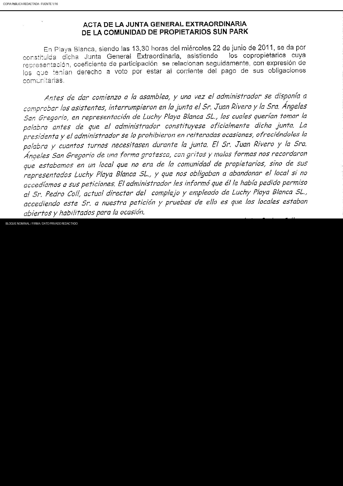
Página fuente 1{kind=link}
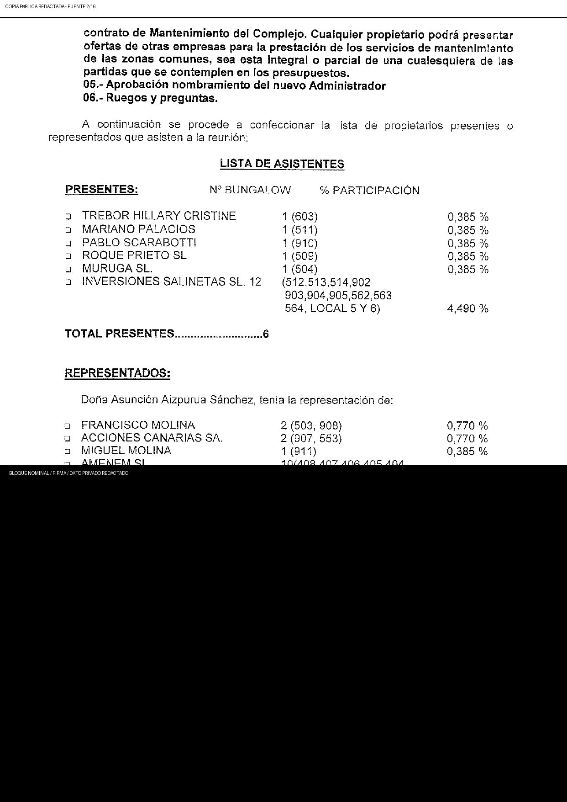
Página fuente 2Página fuente 3{kind=link}
{kind=link}
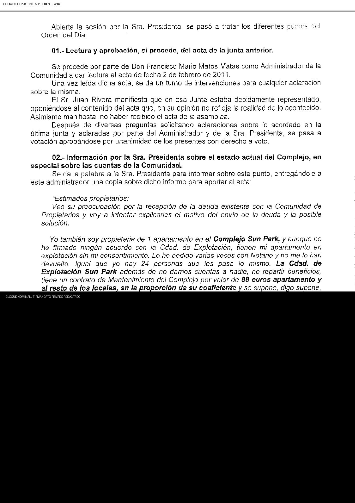
Página fuente 4{kind=link}
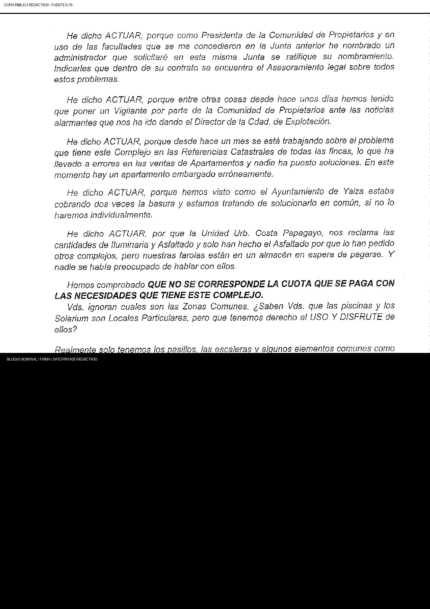
Página fuente 5{kind=link}
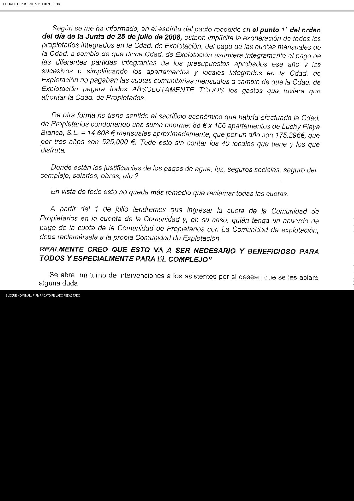
Página fuente 6{kind=link}
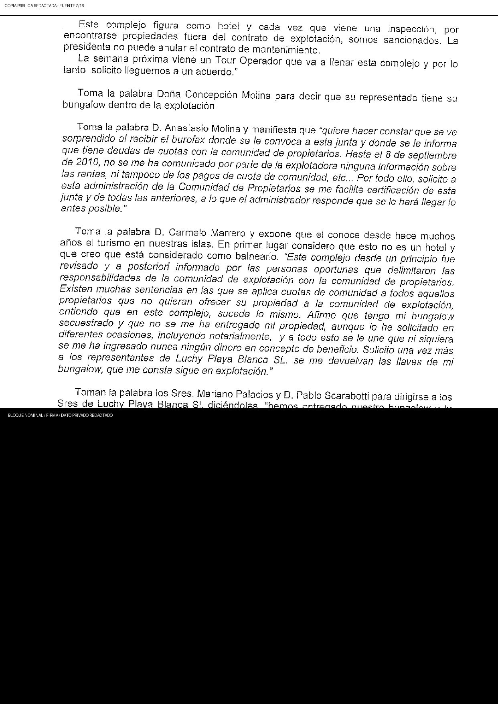
Página fuente 7{kind=link}
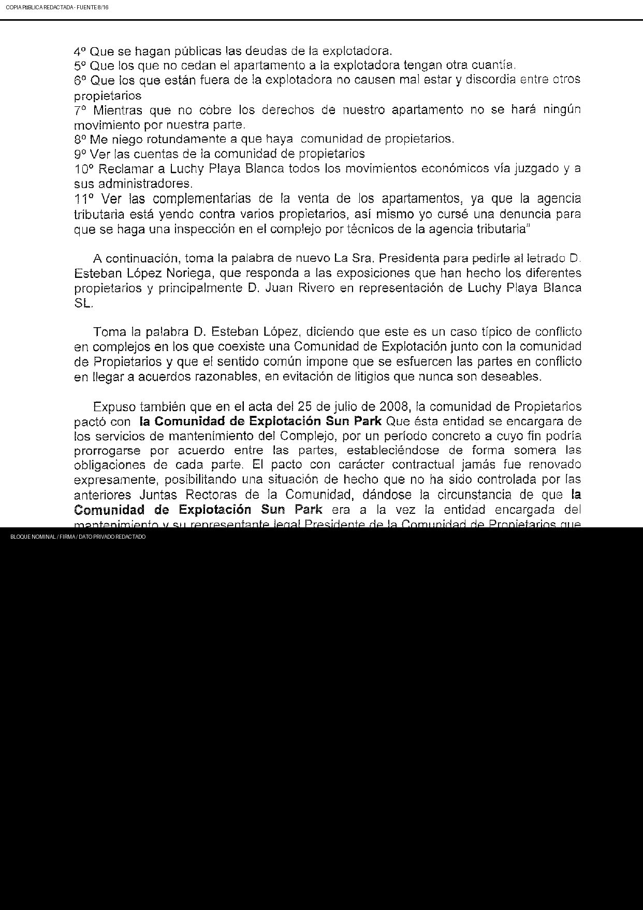
Página fuente 8{kind=link}
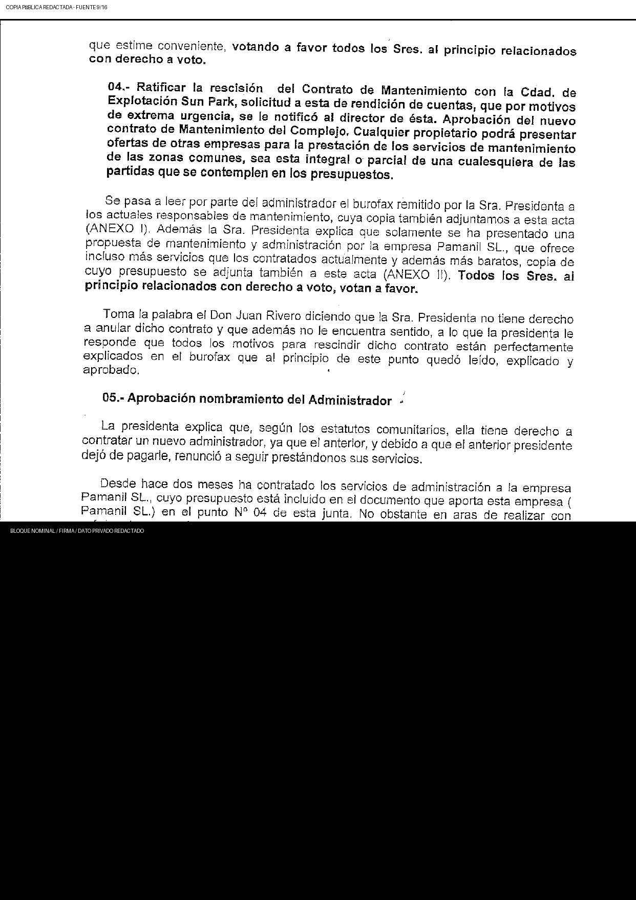
Página fuente 9{kind=link}
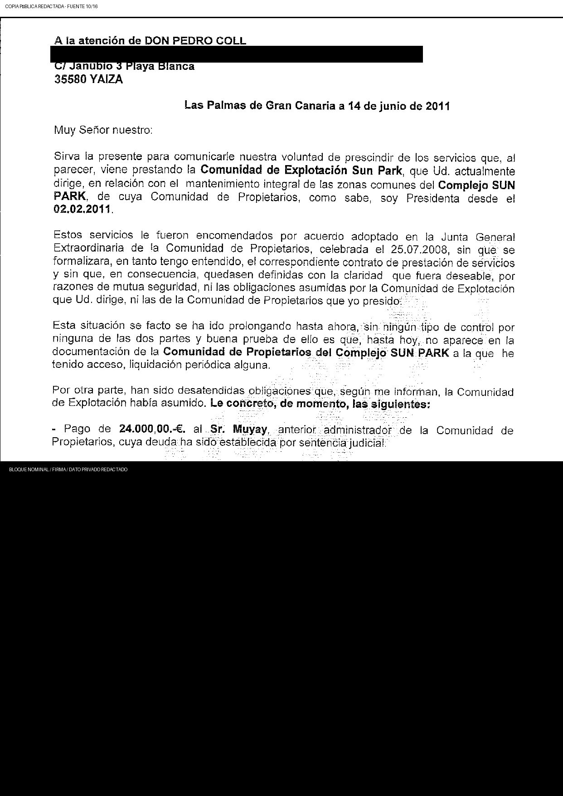
Página fuente 10{kind=link}
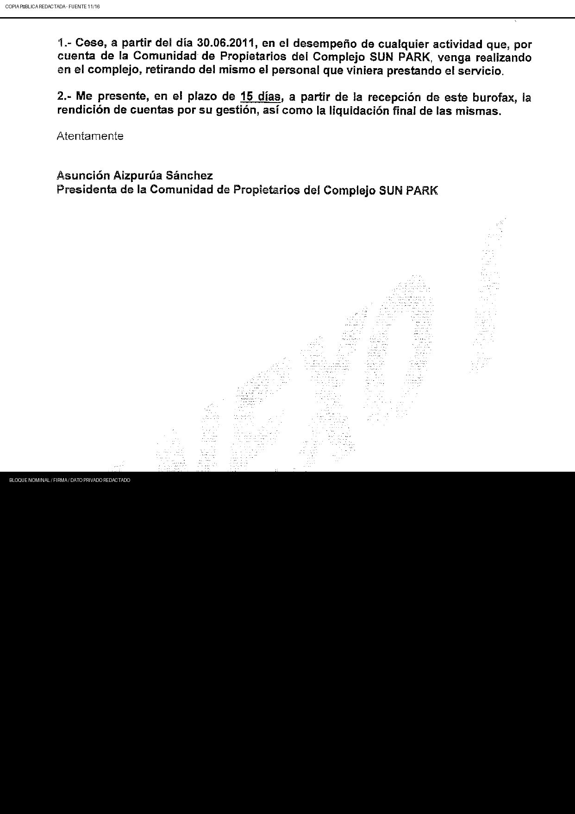
Página fuente 11{kind=link}
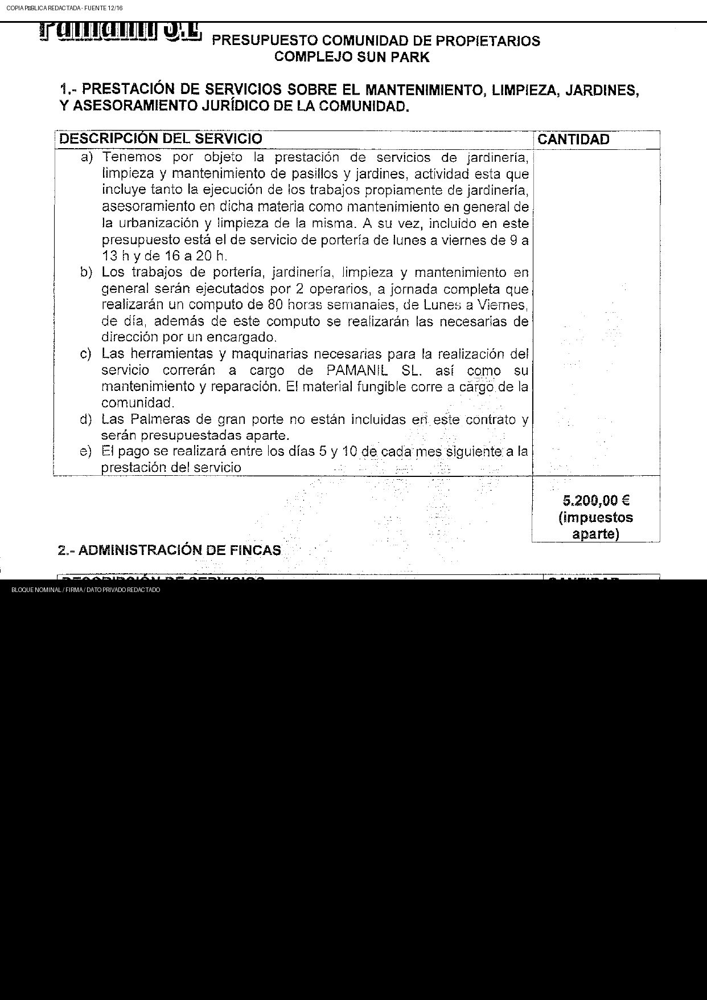
Página fuente 12{kind=link}
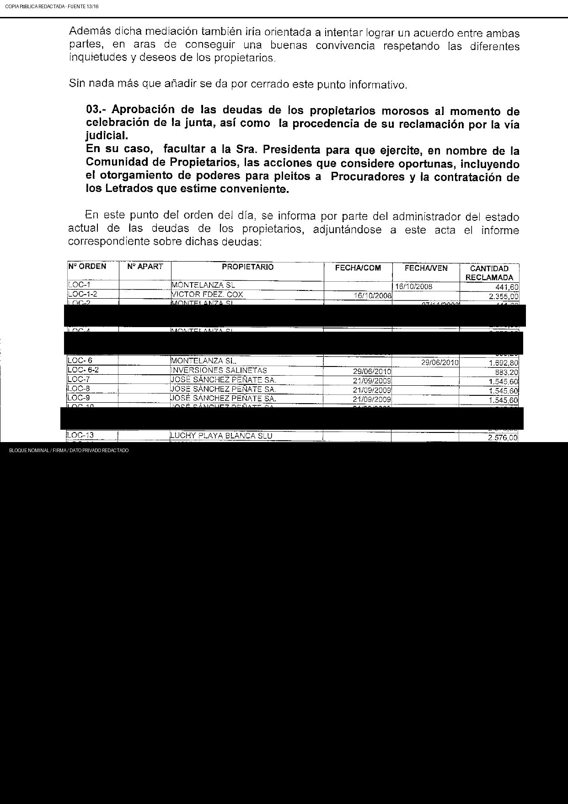
Página fuente 13Página fuente 14Página fuente 15Página fuente 16{kind=link}
{kind=link}
{kind=link}
Actores y entidades relacionados
El enlace indica una relación documental específica del evento o una sucesión/contexto expresamente rotulado. No prueba por sí solo mandato, convocatoria, control, actuación conjunta, validez o culpabilidad.
Continuidad